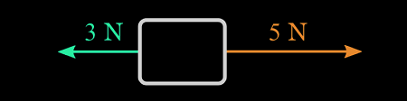
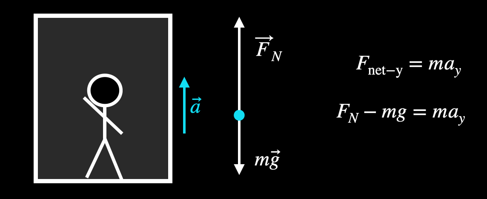

A force is a push or pull on an object due to an interaction. It can cause an object to accelerate, slow down, remain in place, or change direction.
The SI unit of force is Newton (N), named after Sir Isaac Newton, the guy who basically laid down the law(s) — three of them, to be exact.
Types of Forces
Gravitational Force — Pull due to gravity.
Normal Force — Perpendicular contact force from a surface.
Tension Force — Force transmitted through a string, rope, etc.
Frictional Force — Force resisting relative motion.
Applied Force — Force applied by a person or another object.
Important Equations
Newton’s Second Law: \( F = ma \)
Weight: \( W = mg \)
Net Force: \( F_{\text{net}} = \sum F = ma \)
A 3N force acts on a block to the left direction and another 5N force acts on a block to the right direction. What is its resultant force?

Resultant Force = \(5N - 3N\)
Resultant Force = \(2N\)
A girl applies a 10N force to a 5kg block. Find the acceleration
\(F = ma\)
\(a = \frac{F}{m}\)
\(a = \frac{10 \,N}{5 \,kg} = 2 \:ms^{-2}\)
Acceleration = \(2\:ms^{-2}\)
A boy applies a 20N force to a body with unknown mass. Its acceleration is found to be \(4\:ms^{-2}\)
\(F = ma\)
\(m = \frac{F}{a}\)
\(m = \frac{20\,N}{4\,ms^{-2}} = 5 \:kg \)
Mass = \(5\:kg\)
A coconut with a mass 4 kg is travelling at a uniform acceleration of \(10\:ms^{-2}\). What is the resulting force acting on it?
\(F = ma\)
\(F = 4\,kg \times 10\,ms^{-2} = 40\,N\)
Resulting Force = \(40\,N\)
A 40 kg object is in an elevator accelerating upward at \(2\,ms^{-2}\). What is the apparent weight of the object?

\(\uparrow \: Forces: F_N - mg = ma\)
\(F_N = Apparent \;Weight\)
\(F_N - mg = ma\)
\(F_N = m\,(g+a)\)
\(F_N= 40\,kg \times (9.8+2)ms^{-2} = 472\, N \)
Apparent Weight = \(472\,N\)
Friction
Try rubbing your hands. Feel the warmth? That's friction. Now add some water or oil — less heat. Why? Because lubricants reduce friction. This is the same concept that keeps cars from overheating and your joints from creaking like a haunted house.
Friction acts parallel to the surfaces in contact and opposes motion.
Static Friction: \( F_s \le \mu_s N \) (prevents motion)
Kinetic Friction: \( F_k = \mu_k N \) (during motion)
Rolling Friction: Occurs with wheels or rolling objects
Where \(\mu_k\), \( \mu_s\) and N represent static friction coefficient, kinetic friction coeffiecient and normal force respectively
A 5 kg block rests on a horizontal surface with a coefficient of static friction, \(\mu_s = 0.4\) and a coefficient of kinetic friction, \(\mu_k = 0.3\). What is the maximum force that can be applied without moving the block?
Mass: 10 kg, \( \mu_s = 0.4 \)
Normal Force: \( N = mg = 10 \times 9.8 = 98\,\text{N} \)
Maximum Friction Force: \( F_k = \mu_s N = 0.4 \times 98 = 39.2\,\text{N} \)
Maximum Force that can be applied: \( 39.2\:N\)
A 20 kg crate is pulled with a force of \(100 N\) at an angle of \(30^{\circ}\) above the horizontal on a rough surface (\(\mu_k = 0.25\)). Find the acceleration of the crate. (Assume g = \(10\:ms^{-2}\))
A 5 kg block is connected to a hanging 3 kg mass over a frictionless pulley. The coefficient of kinetic friction between the block and the table is 0.2. Find the acceleration of the system.